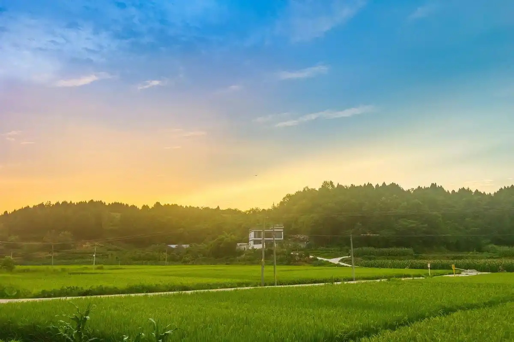
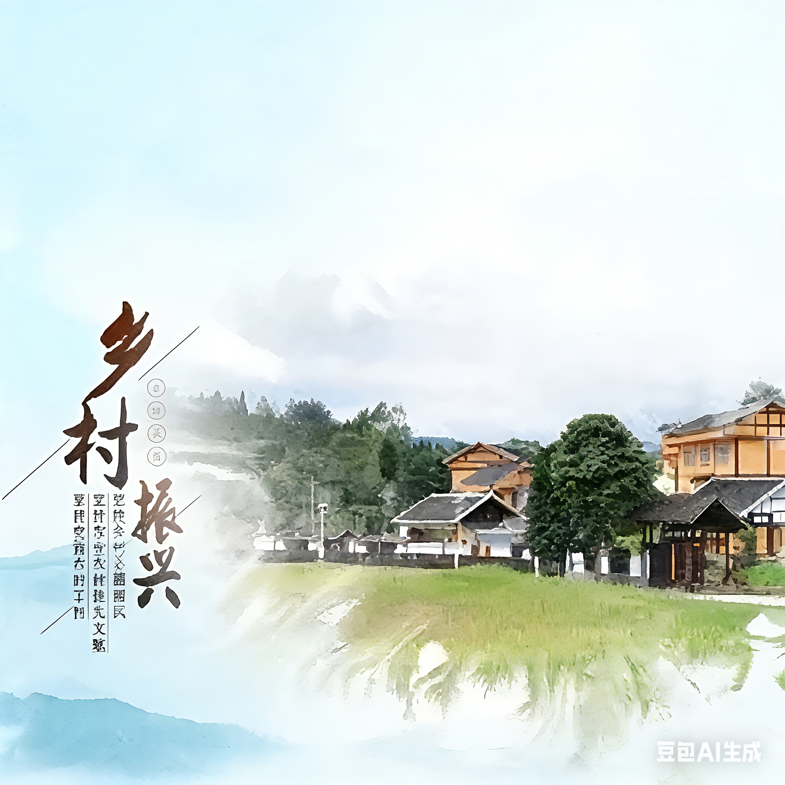

莲花县良坊镇聚焦特色农业发展，打造莲花血鸭产业集群，推动农产品品牌化，助力村民增收致富，是乡村产业振兴的核心示范点。

琴亭镇以生态宜居为目标，推进乡村基础设施升级，完成道路硬化、饮水安全等工程，同时发展乡村旅游，实现生态与经济双提升。
良坊贯彻 “绿水青山就是金山银山” 理念，以 “党支部 + 合作社 + 基地 + 脱贫户” 模式，发展秋雪蜜桃、沃柑等特色水果。白沙、冲头村等分别种植100 至 600 余亩果树，均已挂果销售，可为村集体经济年增收 5-8 万元。
良坊流转闲置土地，整修设施、引进合作社，以 “合作社 + 基地 + 农户” 模式发展红薯、苗木种植。下坊等村红薯种植 300 亩（用于加工），梅洲村苗木80 余亩，预计为村集体增收 4万元。
良坊结合省里产业布局，借帮扶单位之力，以 “帮扶单位 + 党支部 + 特色产业 + 农户” 模式发展中药材。白渡村建 15亩亳菊基地、3000 平灵芝大棚，预计产值 16 万元。
良坊党委以胜龙牛业为龙头，建 “一龙头三中心五基地”，推 “四项联动” 养牛。现已有 26 个合作社、5 个养殖基地，500 余户参与，每户年增收超 3000 元。
建成500亩生态农业示范基地，采用有机种植技术，年产值达300万元。
完成15公里乡村道路硬化，解决了12个自然村的出行难题。
建立乡村电商服务中心，帮助农民销售特色产品，年销售额突破500万元。
您的建议是乡村振兴的重要力量，欢迎提出宝贵意见！
提交建议提案